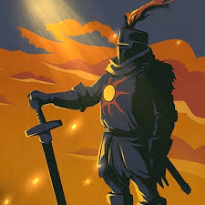

Olá! Eu sou o Fabricio, sou um sujeito amigável e agradável de se ter por perto. Gosto de criar coisas, mas não é só isso que eu faço na vida! Também pratico um esporte chamado "Calistenia" e gosto de jogar no computador de vez em quando. Curto a maioria dos tipos de jogos, mas sem dúvidas meu preferido é o estilo soulslike. Gosto da forma como vivo e tento sempre levar tudo da forma mais leve possível. Odeio me esforçar além do necessário, mas estou sempre disposto a ajudar quem precisar. Também gosto de ler, mesmo que faça raramente. Não me sinto bem em lugares barulhentos e superlotados, mas adoro conhecer pessoas e lugares novos.
Projeto de cardápio
Projeto de estoque
Projeto de portfólio
Conclusão do ensino médio
Conclusão do curso de desenvolvimento de sistemas no Senai
Sou uma pessoa de fácil adaptação a diferentes lugares e habilidades. Sou ótimo em fazer amizades e trabalhar em equipe.
Sou uma pessoa extremamente calma e com alto controle emocional. É muito difícil eu perder a cabeça, independentemente da situação.
Assim como acho que todas as pessoas deveriam querer, meu principal objetivo de vida é alcançar a minha felicidade plena e ser livre na vida e financeiramente para realizar todos os meus sonhos e metas de vida.
Quero realizar tudo aquilo que sempre quis e fazer tudo o que sempre tive vontade, para que um dia eu possa olhar para o sol satisfeito e poder dizer e sentir que cada dia valeu a pena e morrer sem arrependimentos.
Entre em contato comigo pelo email [fabriciojogador1000@gmail.com] ou pelo celular de contato [31 97155-4299].